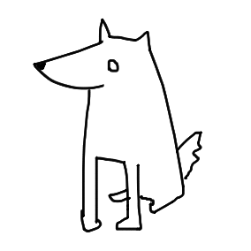

Approach to blogging
2025-06-20
I've given some thought to what would be a good format for my blog. As it turns out, blogs can really vary in structure and intent. While I don't plan on confining myself to rules, I do have a vision for what a personal blog should be.
There are blogs that put emphasis on entertainment, education, diary-like structure with events and emotional output, and probably much more that I'm forgetting. All of these have slightly different goals in perspective. The main question that I should begin with is "What is the goal?"
It's no secret that the key to learning is writing and revision. Expression of concepts in one's own words can really plant the concept deeper into the memory. In school we would write essays all the time, and that's something that's supposed to develop critical thinking, memory, and concentration. The problem is that I, as many others, stop writing after school is over.
Any book read is worthless unless thought about. Any idea is worth analyzing and understanding before we make a decision to adopt or neglect it. Writing allows this freedom of thought.
I've heard Jordan Peterson once say that writing is the best thing you can do to become smarter. I don't know if being smarter is a wise thing to do, nor if it's possible, but I do believe in the power of writing when it comes to learning.
The goal is to exercise the will and the mind and challenge it with ideas and dilemmas. Write things that matter to me, for free, loyal to the idea.
The blog pages will take on a role of mini-essays in an attempt to resurrect my brain from long-lasting abuse of consuming short-form content. I believe that it's very important to not only consume but also create.
